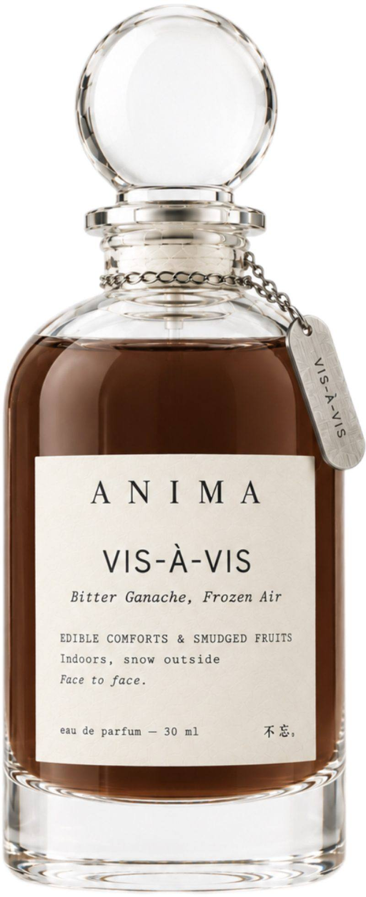

Bitter Ganache, Frozen Air
Narrative Story
I know what they say about us — that we're cold, that we hide — but they don't understand the economics of solitude. The snow is falling outside my window in that slow, deliberate way it does when the city has finally agreed to shut up, and I am exactly where I want to be: indoors, in the armchair with the broken spring, a book cracked open on my knee, and a pen in my hand because I still write my diary longhand, because the scratch of ink on paper is the only sound I want competing with the music in my headphones. On the counter there's ganache left too long, dark and sharp and grown-up and entirely without apology, bitter cocoa on the tongue, and through the window frame comes a cold, clean bite of frozen air. The frost outside, the gold inside — that's the trade I make every winter. It is not loneliness. It is a controlled, intellectual cocoon, and I am warm in it.
一、苦甘纳许，冻气
外面在下雪。不是那种好看的雪，是伦敦十二月常见的那种，灰扑扑的，落在窗台上就化成一摊脏水。我坐在屋里，椅子扶手塌了一边，坐久了腰疼，但我懒得换。书摊在膝盖上，翻到一半，笔搁在手边，日记本上是今天的日期，还没写。耳机里的音乐放完了，我没切歌，就让它静着。
空气里有一股苦味。厨房台面上那块黑巧克力甘纳许，下午做的时候多放了可可，现在凉透了，表面结了一层薄壳。苦得很干净，不甜，不讨好谁。窗外有风从窗框的缝里钻进来，贴着地面走，脚踝先感觉到，一阵一阵的，像被什么轻轻咬了一下。
这种日子，我谁也不见。不是不喜欢人，是见人太费力。要说话，要接住对方的话，要在合适的时候笑。一个人待着，什么都不用接。冷在外面，暖在里面，一本书，一支笔，一天就这么过去了。
Notes
Profile: Ambery Gourmand, Crisp Spice
Top: Aldehydes, Bergamot, Pink pepper | Middle: Violet, Jasmine | Base: Vanilla, Cedarwood, Musk
Occasion
Indoors, snow outside.
Ingredients
ALCOHOL ● PARFUM / FRAGRANCE ● AQUA / WATER / EAU ● BUTYL METHOXYDIBENZOYLMETHANE ● LIMONENE ● LINALOOL ● CITRAL ● ALPHA-ISOMETHYL IONONE ● BENZYL ALCOHOL ● BENZYL BENZOATE ● COUMARIN ● GERANIOL ● FARNESOL
Please be aware that ingredient lists may change or vary from time to time. Please refer to the ingredient list on the product package you receive for the most up to date list of ingredients.